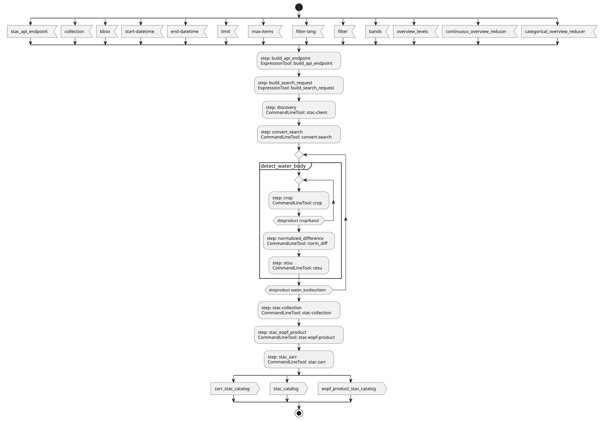
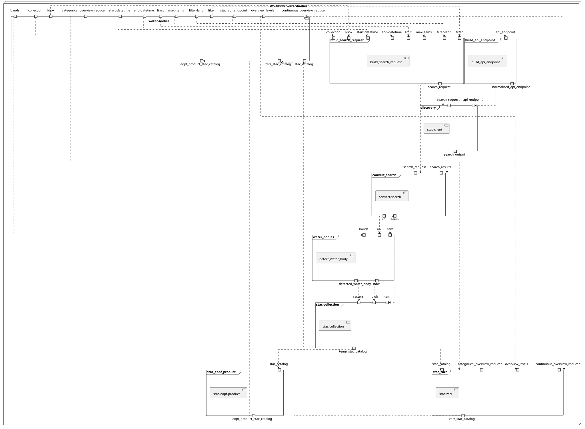
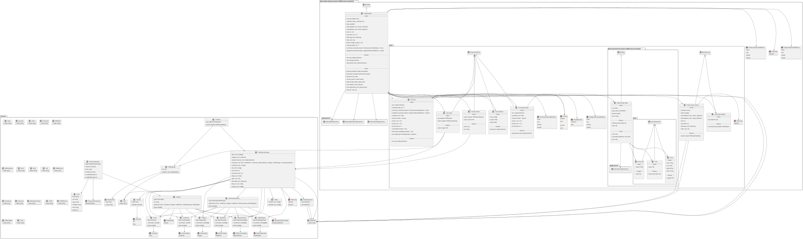
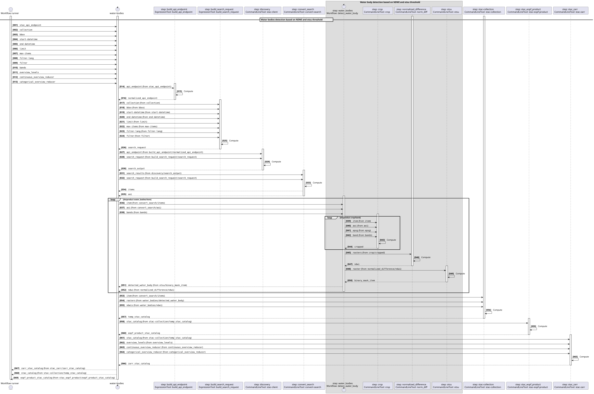
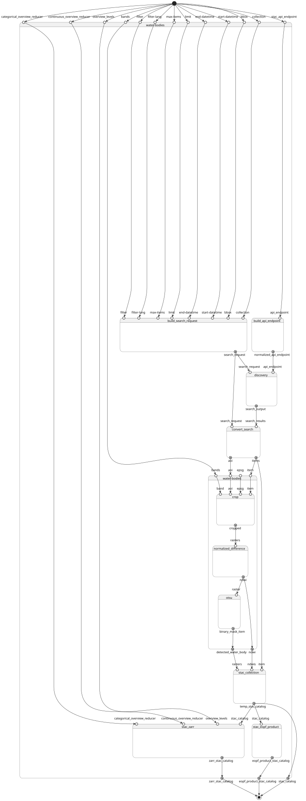
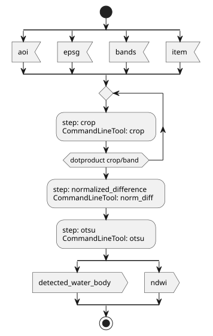
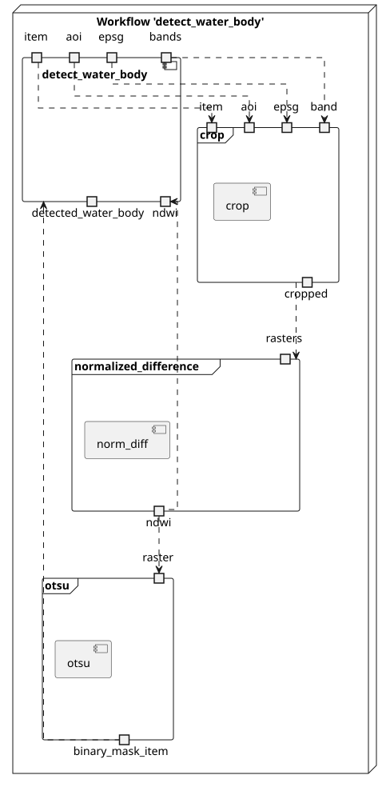
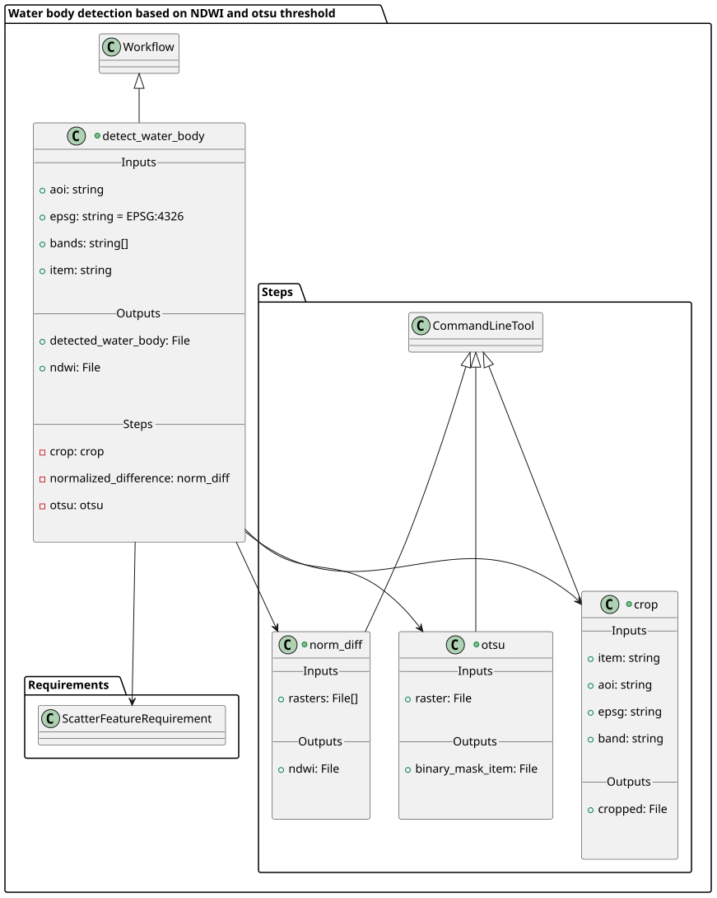
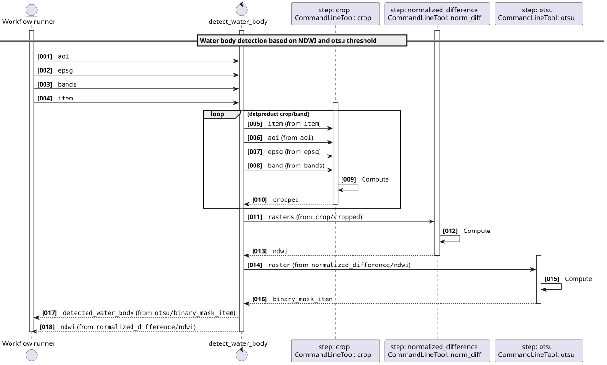
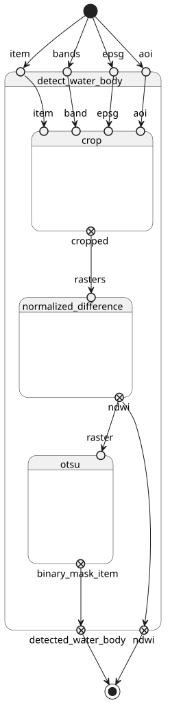

Water bodies detection workflow v1.1.0
Water bodies detection based on NDWI and Otsu threshold applied to Sentinel-2 COG STAC items
This software is licensed under the terms of the license - SPDX short identifier:
2026-03-19 - 2026-03-20T21:28:32.321 Copyright EOAP -
Project Team
Authors
| Name | Organization | Role | Identifier | |
|---|---|---|---|---|
| Brito, Fabrice | info@terradue.com | Terradue |
Contributors
The are no contributors for this project.
Zarr Cloud-Native Format documentation
Zarr Cloud-Native Format documentation can be found on https://eoap.github.io/zarr-cloud-native-format/.
Runtime environment
Supported Operating Systems
Requirements
Software Source code
- Browsable version of the source repository;
- Continuous integration system used by the project;
- Issues, bugs, and feature requests should be submitted to the following issue management system for this project
water-bodies
CWL Class
Requirements
Inputs
| Id | Type | Label | Doc |
|---|---|---|---|
stac_api_endpoint |
Any | STAC API endpoint | STAC API endpoint |
collection |
string | STAC collection | STAC collection identifier |
bbox |
array of double |
Bounding box | Bounding box as [minx, miny, maxx, maxy] |
start-datetime |
One of: | Start time | Start time |
end-datetime |
One of: | End time | End time |
limit |
int | limit | limit |
max-items |
int | max-items | max-items |
filter-lang |
One of: | Filter language | Filter language |
filter |
One of: | Filter | Filter |
bands |
array of string |
bands used for the NDWI | bands used for the NDWI |
overview_levels |
int | Number of Zarr overview levels | Number of multiscale overview levels generated by stac-zarr |
continuous_overview_reducer |
enum:
|
Overview reducer for continuous variables | Reducer used for continuous variables when generating overviews (mean, max, median, nearest) |
categorical_overview_reducer |
enum:
|
Overview reducer for categorical variables | Reducer used for categorical variables when generating overviews (mean, max, median, nearest) |
Steps
| Id | Runs | Label | Doc |
|---|---|---|---|
| build_search_request | #build_search_request |
Build STAC search request | Build STACSearchSettings from bbox and query inputs |
| build_api_endpoint | #build_api_endpoint |
Build STAC API endpoint | Normalize endpoint to APIEndpoint schema expected by discovery step |
| discovery | #stac-client |
STAC API discovery | Discover STAC items from a STAC API endpoint based on a search request |
| convert_search | #convert-search |
Convert Search | Convert Search results to get the item self hrefs and the area of interest |
| water_bodies | #detect_water_body |
Water bodies detection | Water bodies detection based on NDWI and otsu threshold applied to each STAC item (sub-workflow) |
| stac-collection | #stac-collection |
Create a STAC catalog with COG outputs | Create a STAC catalog with the detected water bodies COG outputs |
| stac_eopf_product | #stac-eopf-product |
Create a EOPF Zarr store from a STAC catalog | Create a EOPF Zarr store from a STAC catalog with COG products |
| stac_zarr | #stac-zarr |
Create a STAC Catalog for the Zarr store | Create a STAC Catalog for the Zarr store from the STAC catalog with COG outputs |
Outputs
| Id | Type | Label | Doc |
|---|---|---|---|
zarr_stac_catalog |
Directory | None | None |
stac_catalog |
Directory | None | None |
eopf_product_stac_catalog |
Directory | None | None |
UML Diagrams
Activity diagram
Learn more about the Activity diagram below.

Component diagram
Learn more about the Component diagram below.

Class diagram
Learn more about the Class diagram below.

Sequence diagram
Learn more about the Sequence diagram below.

State diagram
Learn more about the State diagram below.

Run in step
build_search_request
build_search_request
CWL Class
Inputs
| Id | Option | Type |
|---|---|---|
collection |
--collection |
string |
bbox |
--bbox |
array of double |
start-datetime |
--start-datetime |
One of: |
end-datetime |
--end-datetime |
One of: |
limit |
--limit |
int |
max-items |
--max-items |
int |
filter-lang |
--filter-lang |
One of: |
filter |
--filter |
One of: |
Run in step
build_api_endpoint
build_api_endpoint
CWL Class
Inputs
| Id | Option | Type |
|---|---|---|
api_endpoint |
--api_endpoint |
Any |
Run in step
discovery
stac-client
CWL Class
Inputs
| Id | Option | Type |
|---|---|---|
api_endpoint |
--api_endpoint |
APIEndpoint: |
search_request |
--search_request |
STACSearchSettings:
|
Execution usage example:
stac-client search $(inputs.api_endpoint.url.value) ${ const args = []; const collections = inputs.search_request.collections; args.push('--collections', collections.join(",")); return args; } ${ const args = []; const bbox = inputs.search_request?.bbox; if (Array.isArray(bbox) && bbox.length >= 4) { args.push('--bbox', ...bbox.map(String)); } return args; } ${ const args = []; const limit = inputs.search_request?.limit; args.push("--limit", (limit ?? 10).toString()); return args; } ${ const maxItems = inputs.search_request?.['max-items']; return ['--max-items', (maxItems ?? 20).toString()]; } ${ const args = []; const filter = inputs.search_request?.filter; const filterLang = inputs.search_request?.['filter-lang']; if (filterLang) { args.push('--filter-lang', filterLang); } if (filter) { args.push('--filter', JSON.stringify(filter)); } return args; } ${ const datetime = inputs.search_request?.datetime; const datetimeInterval = inputs.search_request?.datetime_interval; if (datetime) { return ['--datetime', datetime]; } else if (datetimeInterval) { const start = datetimeInterval.start?.value || '..'; const end = datetimeInterval.end?.value || '..'; return ['--datetime', `${start}/${end}`]; } return []; } ${ const ids = inputs.search_request?.ids; const args = []; if (Array.isArray(ids) && ids.length > 0) { args.push('--ids', ...ids.map(String)); } return args; } ${ const intersects = inputs.search_request?.intersects; if (intersects) { return ['--intersects', JSON.stringify(intersects)]; } return []; } --save discovery-output.json \
--api_endpoint <API_ENDPOINT> \
--search_request <SEARCH_REQUEST>
Run in step
convert_search
convert-search
CWL Class
Inputs
| Id | Option | Type |
|---|---|---|
search_request |
--search_request |
STACSearchSettings:
|
search_results |
--search_results |
File |
Execution usage example:
/bin/sh run.sh \
--search_request <SEARCH_REQUEST> \
--search_results <SEARCH_RESULTS>
Run in step
water_bodies
detect_water_body
CWL Class
Requirements
Inputs
| Id | Type | Label | Doc |
|---|---|---|---|
aoi |
string | None | area of interest as a bounding box |
epsg |
string | None | EPSG code |
bands |
array of string |
None | bands used for the NDWI |
item |
string | None | STAC item |
Steps
| Id | Runs | Label | Doc |
|---|---|---|---|
| crop | #crop |
None | None |
| normalized_difference | #norm_diff |
None | None |
| otsu | #otsu |
None | None |
Outputs
| Id | Type | Label | Doc |
|---|---|---|---|
detected_water_body |
File | None | None |
ndwi |
File | None | None |
UML Diagrams
Activity diagram
Learn more about the Activity diagram below.

Component diagram
Learn more about the Component diagram below.

Class diagram
Learn more about the Class diagram below.

Sequence diagram
Learn more about the Sequence diagram below.

State diagram
Learn more about the State diagram below.

Run in step
crop
crop
CWL Class
Inputs
| Id | Option | Type |
|---|---|---|
item |
--input-item |
string |
aoi |
--aoi |
string |
epsg |
--epsg |
string |
band |
--band |
string |
Execution usage example:
python -m app \
--input-item <ITEM> \
--aoi <AOI> \
--epsg <EPSG> \
--band <BAND>
Run in step
normalized_difference
norm_diff
CWL Class
Inputs
| Id | Option | Type |
|---|---|---|
rasters |
--rasters |
array of File |
Execution usage example:
python -m app \
--rasters <RASTERS>
Run in step
otsu
otsu
CWL Class
Inputs
| Id | Option | Type |
|---|---|---|
raster |
--raster |
File |
Execution usage example:
python -m app \
--raster <RASTER>
Run in step
stac-collection
stac-collection
CWL Class
Inputs
| Id | Option | Type |
|---|---|---|
item |
--item |
array of string |
rasters |
--rasters |
array of File |
ndwis |
--ndwis |
array of File |
Execution usage example:
stac-collection \
--item <ITEM> \
--rasters <RASTERS> \
--ndwis <NDWIS>
Run in step
stac_eopf_product
stac-eopf-product
CWL Class
Inputs
| Id | Option | Type |
|---|---|---|
stac_catalog |
--stac-catalog |
Directory |
resolution |
--resolution |
One of: |
chunks |
--chunks |
enum:
|
chunk_x |
--chunk-x |
int |
chunk_y |
--chunk-y |
int |
chunk_time |
--chunk-time |
int |
Execution usage example:
stac-eopf-product \
--stac-catalog <STAC_CATALOG> \
(--resolution <RESOLUTION>) \
--chunks <CHUNKS> \
--chunk-x <CHUNK_X> \
--chunk-y <CHUNK_Y> \
--chunk-time <CHUNK_TIME>
Run in step
stac_zarr
stac-zarr
CWL Class
Inputs
| Id | Option | Type |
|---|---|---|
stac_catalog |
--stac-catalog |
Directory |
overview_levels |
--overview-levels |
int |
continuous_overview_reducer |
--continuous-overview-reducer |
enum:
|
categorical_overview_reducer |
--categorical-overview-reducer |
enum:
|
resolution |
--resolution |
One of: |
chunks |
--chunks |
enum:
|
chunk_x |
--chunk-x |
int |
chunk_y |
--chunk-y |
int |
chunk_time |
--chunk-time |
int |
consolidate |
--consolidate |
boolean |
titiler_eopf_compatible |
--titiler-eopf-compatible |
boolean |
stac_object_type |
--stac-object-type |
enum:
|
Execution usage example:
stac-zarr \
--stac-catalog <STAC_CATALOG> \
--overview-levels <OVERVIEW_LEVELS> \
--continuous-overview-reducer <CONTINUOUS_OVERVIEW_REDUCER> \
--categorical-overview-reducer <CATEGORICAL_OVERVIEW_REDUCER> \
(--resolution <RESOLUTION>) \
--chunks <CHUNKS> \
--chunk-x <CHUNK_X> \
--chunk-y <CHUNK_Y> \
--chunk-time <CHUNK_TIME> \
--consolidate <CONSOLIDATE> \
--titiler-eopf-compatible <TITILER_EOPF_COMPATIBLE> \
--stac-object-type <STAC_OBJECT_TYPE>